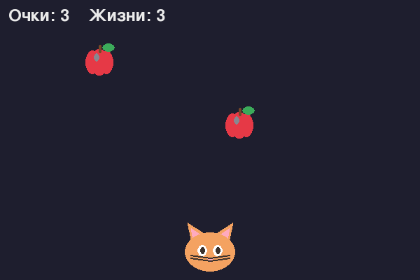

Кот ловит падающие яблоки. Соберёшь игру с картинками и звуками за 6 шагов!

rect.colliderect(), а в конце — картинки и звуки.
Не знаешь, что такое терминал, venv и как всё запустить? → 🚀 Подготовка
python games/catch/code/step1_basket.py
Кот ездит влево-вправо по нажатым стрелкам.
Сверху падает яблоко и возвращается наверх.
Столкновение через colliderect и счёт очков.
Промахи, проигрыш и рестарт по пробелу.
Меняем прямоугольники на спрайты кота и яблока.
Весёлый «дзынь» при ловле и низкий — при промахе.
assets (кот, яблоко, звуки). Поэтому для
готовой игры качай весь проект архивом — отдельный .py без
картинок не запустится.
pip install pygame-ce. Потом запускай файл:
python catch.py (из папки игры, чтобы рядом была папка
assets).